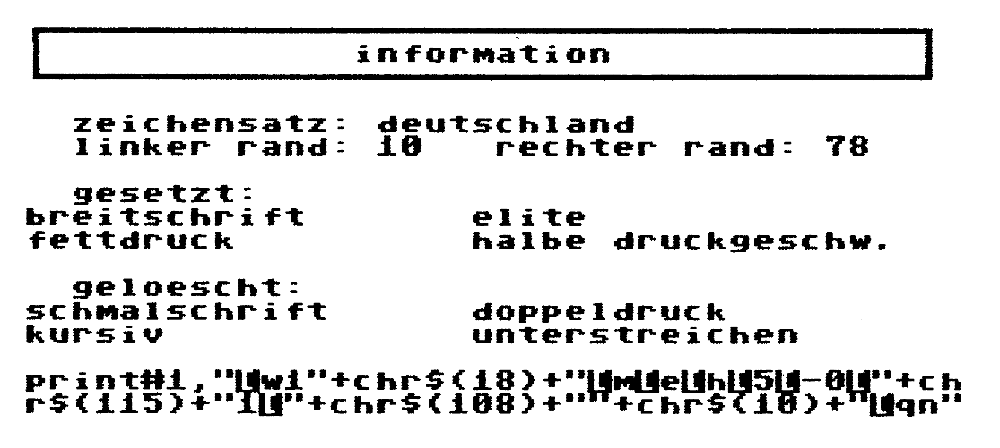
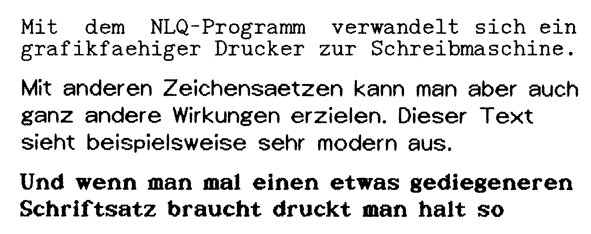

Hilfspaket für Drucker
Aus deutschen Landen kommt eine tolle Programm-Sammlung für alle Besitzer Epson-kompatibler Drucker. Technicus heißt das Wunderding, das Ihnen viele neue Möglichkeiten des Druckens eröfffnet.
Können Sie sich keine Escape-Sequenzen merken? Sind Sie immer noch auf der Suche nach der richtigen Hardcopy-Routine? Wollen Sie Listings im Original-Commodore-Zeichensatz ausdrucken, obwohl den Ihr Drucker nicht kennt, und würden Sie vielleicht auch noch Ihrem Drucker die NLQ-Schrift beibringen wollen?
Um all diese Probleme auf einmal zu lösen, reicht weder ein intelligentes Druckerinterface, noch ein gutes Programm. Da kommt das Software-Paket »Technicus« gerade recht, das für alle oben angesprochenen Probleme eine Lösung und ein eigenes Programm parat hat — und das zu einem Komplett-Preis von 39 Mark. Der einzige Haken an der Sache: Technicus läuft nur mit Epson und 100%-kompatiblen Druckern.
Interface für jeden Zweck
Die beliebteste, problemloseste und auch schnellste Methode, einen Drucker am C 64 anzuschließen, ist ein Kabel vom User-Port zum Centronics-Eingang. Diese sogenannten Centronics-Kabel kann man leicht selber löten (wie, wird beispielsweise in der Technicus-Anleitung beschrieben). Um den Drucker aber mit einem solchen Kabel anzusteuern, bedarf es eines entsprechenden Programms, eines Software-Interface. Im Technicus-Paket sind zwei verschiedene Software-Interfaces integriert. Das erste ist eine Minimal-Lösung, die alle Druckdaten ungewandelt zum Drucker schickt. Das zweite Software-Interface hingegen kann eine ganze Menge mehr. Auf den angesprochenen Druckern (Epson und kompatible) wird auf Wunsch der Commodore-Zeichensatz gedruckt. Außerdem lassen sich viele Parameter wie Druckdichte und Zeichenhöhe einstellen.
Das Programm »Druckerhilfe« ist ein Segen für alle Programmierer, die nicht ewig in Tabellen und Anhängen ihres Druckerhandbuches wühlen wollen. Es macht die Suche nach den Escape-Sequenzen ein für allemal überflüssig: Der C 64 erstellt die Escape-Sequenzen selber! Dazu geben Sie einfach per Menü-Auswahl vor, was Sie möchten: Ob Breitschrift, Tiefstellen, Proportionaldruck, Zeichensatz-Einstellung, Blatteinzug oder Seitenlänge, ein Knopfdruck genügt und der C 64 schreibt Ihnen automatisch einen PRINT-Befehl mit den entsprechenden Escape-Sequenzen auf den Schirm, den Sie nur noch in Ihr eigenes Programm einfügen müssen. Wie so eine Escape-Sequenz aussehen kann, sehen Sie in einer Hardcopy (Bild ]).

Damit wären wir auch schon beim nächsten Programmteil: den Hardcopies. Es gibt zwei grundverschiedene Hardcopy-Routinen im Technicus. Eine ist für den Ausdruck von mehrfarbigen Bildern in verschiedenen Graustufen zuständig. Die Graustufen können dabei vom Anwender frei definiert werden. Damit die Hardcopy mit möglichst vielen Programmen und Basic-Erweiterungen funktioniert, kann sie in beliebige Speicherbereiche geladen werden. Nach dem Initialisieren des Hardcopy-Programms wird der Druckvorgang durch Drücken der <RESTORE>-Taste ausgelöst.
Die zweite Hardcopy-Routine für einfarbige Bilder eignet sich nicht nur für HiRes-, sondern auch für normale Text-Bildschirme. Außerdem gibt es eine Vielzahl von Parametern, die der Benutzer verändern kann. So ist beispielsweise die Größe der Hardcopy (von der Briefmarke bis zum DIN-A4-Blatt), die Druckdichte und der zu druckende Bildschirm-Ausschnitt einstellbar.
Der letzte Programmteil ist der interessanteste, denn er ermöglicht den NLQ-Druck auf Druckern, die diese Fähigkeit nicht eingebaut haben (Bild 2).

Drucken wie nie zuvor
Für den NLQ-Druck werden vier verschiedene Zeichensätze in jeweils drei verschiedenen Größen mitgeliefert. Es kann pro Druckvorgang aber nur ein einziger Zeichensatz verwendet werden. Alle Zeichen werden, wenn gewünscht, in Proportionalschrift ausgedruckt. Zusätzlich wurde eine abschaltbare Blocksatz-Option (Randausgleich auf beiden Seiten) integriert. Text kann auch unterstrichen gedruckt werden. Leider fehlen weitere Schriftarten wie Fettdruck, oder hoch- und tiefgestellter Druck.
Die Einsatzmöglichkeiten des NLQ-Programms sind vielfältig: Zum einen kann es von Basic aus mit dem normalen PRINT-Befehl genutzt werden. Um Disketten-Files (beispielsweise von Textomat) zu drucken, gibt es einen eigenen Spooler. Schließlich arbeitet das Programm auch mit den meisten Vizawrite-Versionen zusammen, so daß man von dort aus seine Texte gleich in Schönschrift drucken kann.
Natürlich wird auch ein Editor mitgeliefert, mit dem man eigene Zeichensätze kreieren kann. Der Editor ist sehr schnell und recht einfach zu bedienen und rundet das NLQ-Programm glänzend ab.
Obwohl man vielleicht das eine oder andere Programm nicht benötigt, ist Technicus eine tolle Programmsammlung für alle Epson-kompatiblen Drucker, die man gerade Einsteigern getrost empfehlen kann. Aber auch der Vollprofi wird die Routinen gut gebrauchen können. Mit all seinen Möglichkeiten und einem 20 Seiten starken, guten deutschen Handbuch ist der Preis des Technicus mit 40 Mark sicherlich nicht nur angemessen, sondern extrem günstig.
(bs)Info: Berthold Trenkel, Schlesienstr. 10,
7320 Göppingen